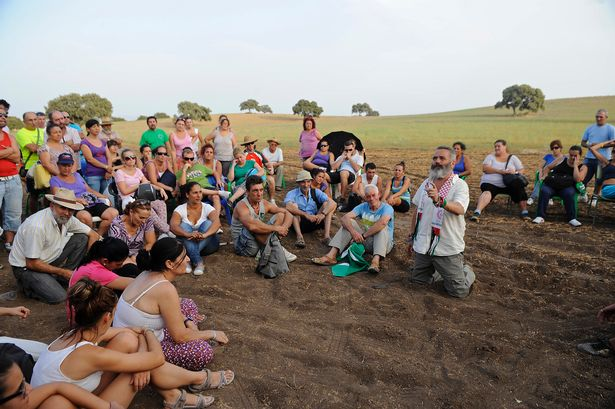
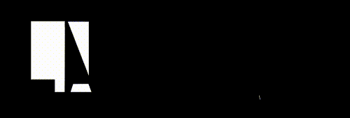

25 km²
Total area
2,626
Population
UTC+1
Time zone
+34
Area code
마리날레다,
평화 향한 유토피아
‘직접 민주주의를 실현하고 있는 도시’, ‘사회주의 유토피아’ 그리고 ‘이상한 마을’로도 불리는 마리넬리다는 스페인의 안달루시아 지방 자치주 이름이자 수도인 세비야에서 100km 정도 떨어져 있는 인구 2700여명이 살고 있는 작은 도시입니다. 마리날레다 협동조합에서 일하는 사람들은 모두 하루에 여섯시간 반 일하고 똑같은 봉급 47유로를 받습니다. 어느시기에 어떤 농작물을 기를지 결정할 때도 모두에게 회의참여를 장려해, 마을 총회에서 초점이됩니다. 토마스 모어가 말한 ‘어디에도 없는’이라는 뜻의 유토피아가 현실에서 40년 이상 존재해왔습니다. 그런데 우리는 왜 이런 사회주의 도시가 존재한다는 사실을 잘 몰랐을까요?


쉼표와 느낌표 로고
마리날레다의 키워드인 연대/통합/협동/상생을 생각해보았을 때 마리날레다라는 이름을 적어보고 이름의 빈틈을 채워보면 어떨까 생각해보았습니다. 서로 연대하여 부족함을 채워주고 사회주의 도시로써 빈곤함 없이 동등하게 나누는 것을 생각해 보았을 때 이런 아이디어가 떠올랐고 틈 속에서 쉼표와 느낌표를 떠올리는 형태를 발견 할 수 있었습니다. 농업을 중시하고 협동을 중시하는 마리날레다의 시민성을 쉼표로 표현하고 투쟁을 통한 쟁취를 이뤄낸 힘있는 시민들을 느낌표로 표현하여 이러한 특성을 가진 마리날레다의 로고를 완성하였습니다.